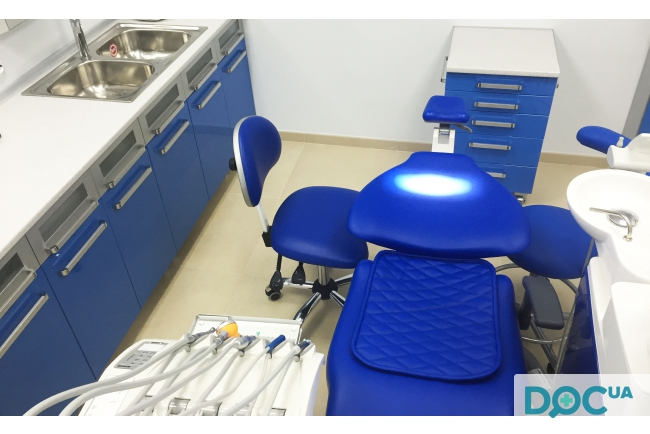

Стоматологічна клініка "Пародент".
Чарівна посмішка «працює» як візитка і забезпечує 90% успіху у будь-якому товаристві. Але важливо, щоб зуби були не лише гарними, а й повноцінно виконували функцію жування. Тобто важливою є функціональна повноцінність зубо-щелепової системи. Але у той час, як карієс зубів та його ускладнення тепер можна легко діагностувати і успішно вилікувати, то захворюванням пародонту (тканин, які оточують зуби) та їх профілактиці приділяється недостатньо уваги. Про це свідчить і сумна статистика: 95% дорослого населення та 60% дітей і підлітків страждають від захворювань пародонту! Недарма ж у народі кажуть: “Перш ніж будувати дім – подумай про надійний фундамент”.
Стоматологічні клініки Львів
Найкраща стоматологія Львова представлена мережею стоматологічних клінік “Пародент”. Одна з перших стоматологічних клінік «Пародент» (м. Львів, вул. Глибока, 4) вже понад 18 років допомагає людям справлятися із захворюваннями пародонту. На 10-ту річницю діяльності клініки розпочав роботу новий Центр пародонтології (вул. Личаківська, 52). На 17-ту річницю відкрито третю клінку по вул. Чайковського, 29. Стоматологія Львова на сьогодні розвинена на високому рівні. “Пародент” є спеціалізованою клінікою, лікарі якої підходять до проблеми патології пародонту комплексно, враховуючи усі можливі і наявні причини виникнення хвороби.Команда лікарів індивідуально для кожного окремого пацієнта підбирає особливу схему лікування, що буде найбільш ефективна та дієва саме для нього.
Стоматологія Львів
Сьогодні якісна стоматологія у Львові з гарантованим результатом надається мережею клінік «Пародент». Кращі стоматологи Львова допоможуть повернути здорову і гарну посмішку. Успіх лікування – це не лише справа лікаря. Він залежить від співпраці із пацієнтом. Пам’ятайте, що щоденний догляд за зубами та ротовою порожниною попереджує більшість проблем. Харчування здоровою їжею, багатою кальцієм та мінералами – запорука вашого здоров’я.

Лікування по страхівці в стоматологічній клініці
«Пародент»
Ми співпрацюємо з провідними страховими компаніями в рамках програми Добровільного Медичного Страхування.
Страхові компанії , з якими ми співпрацюємо:
- “Інго-Україна”
- “Країна”
- “МАРС Асистанс”
- “Альфа-Ассістанс-А”
- “Універсальна”
- “Смарт Асистанс”
- “Прем’єр-Асістанс”
- “Провідна”
- “Українська страхова група”
- Страхова група “ТАС”
Послуги стоматологічних клінік «Пародент»
Мережа клінік “Пародент” пропонує пацієнтам широкий спектр стоматологічних послуг високого рівня і якості, починаючи від різних способів діагностики і до складних операцій при лікуванні хвороб порожнини рота.
- Діагностика
- Знечулення
- Рентгенографія
- Професійна гігієна ротової порожнини
- Відбілювання зубів
- Терапевтична стоматологія
- Ендодонтичне лікування зубів
- Хірургічна стоматологія
- Пародонтологія
- Ортопедична стоматологія
- Імплантологія
- Дитяча стоматологія
- Лікування пародонтиту апаратом Вектор
- Центрифугування крові
- Професійна гігієна апаратом “Cavitron”
В наших стоматологічних клініках при лікуванні зубів використовуються новітні технології та методики. Наші кваліфіковані спеціалісти зроблять все для вирішення Ваших різноманітних стоматологічних потреб.
Якщо Ви бажаєте записатися до нас на прийом або довідатися інформацію стосовно лікування, то просимо завітати до нас або зателефонувати.